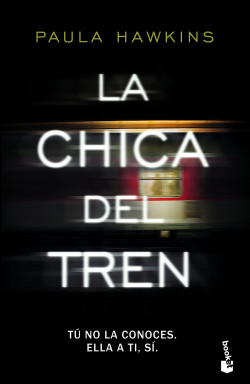

Café

Está es nuestra selección de libros para cuando estes disfrutando de tú café
El psicoanalista
El psicoanalista es una novela escrita por John Katzenbach, publicada en 2002. Este thriller psicológico es una de las novelas más exitosas del autor. Cuenta con más de un millón de ejemplares vendidos y en 2004 ganó el Gran Premio de la Literatura Policíaca en la categoría internacional.
La chica del tren

La chica del tren es una novela de intriga y misterio de la autora británica Paula Hawkins, publicada en 2015, que se convirtió en un superventas en Gran Bretaña, Estados Unidos y Uruguay desde ...
La chica del tren es una novela de intriga y misterio de la autora británica Paula Hawkins, publicada en 2015, que se convirtió en un superventas en Gran Bretaña, Estados Unidos y Uruguay desde ...
Podría gustarte esta canción mientras disfrutas de la lectura
Te